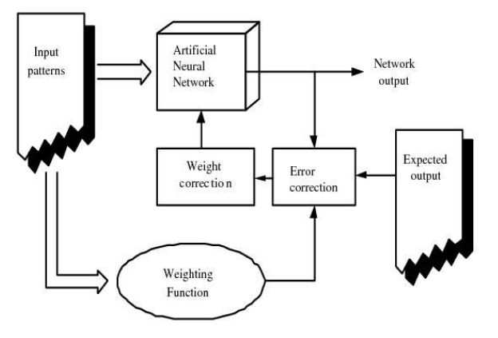
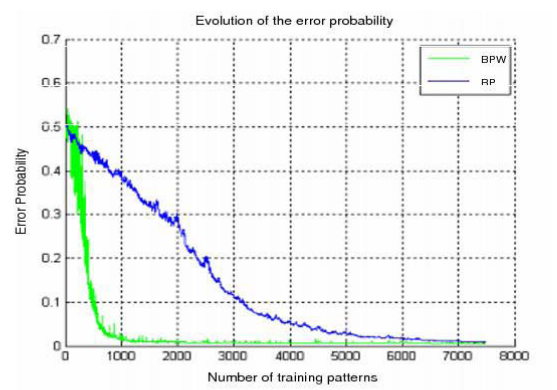
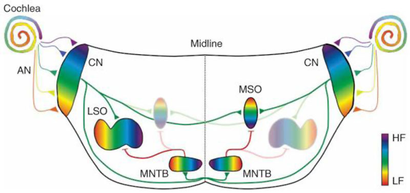
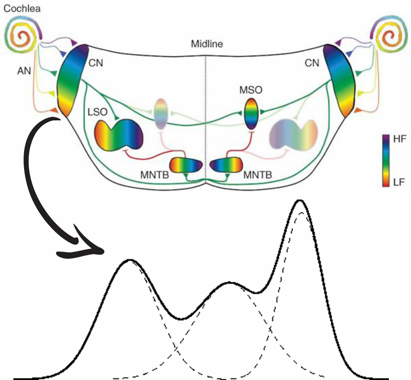
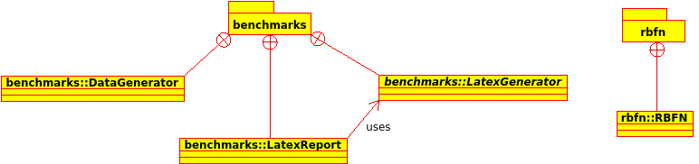
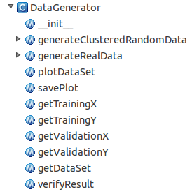
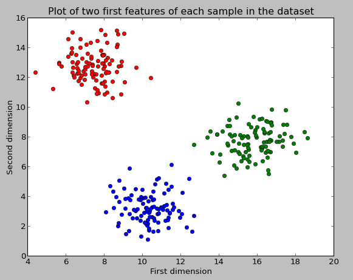
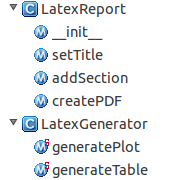
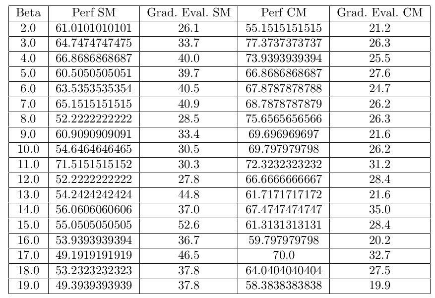

Optimización deRedes Neuronalesmediante métodosbioinspirados
Created by Antonio Molina García-Retamero
Justificación y objetivos
Abordar el problema del aprendizaje desde una persperctiva biológica.
- Estudio del estado del arte del problema.
- Plantear de soluciones al problema.
- Realizar una experimentación sobre este
Planteamiento del problema
Partiendo del trabajo del profesor Diego Andina sobre las MLP
Aplicar el concepto de metaplasticidad a RBFN
El estado del arte
Metaplasticidad en redes biológicas
- Cambio dependiente de la actividad que modula la plasticidad sináptica en los sistemas neuronales
- Long-Term Potentation
- Long-Term Depression
Plasticity of synaptic plasticity
Metaplasticidad en redes artificales
Como postuló Shannon:
Los casos menos frequentes contienen más información
Metaplasticidad en redes artificales
$\delta_j^{(S)} = (y_j - \widehat{y}^{(S)}_j) \cdot \dfrac{f^{'(S)}}{f^*_X(x)}$
Metaplasticidad en redes artificales
La distribución normal es la más normal de las distribuciones
$f^*_X(x) = \dfrac{A}{\sqrt{(2\pi)^n} \cdot e^{\dfrac{B}{8} \sum_{i=1}^n{x_i^2}}}$
Metaplasticidad en redes artificales
Conclusiones del estudio
- Encontrando una función subóptima que se aproxime a la función de distribución de probabilidad de los datos que componen la señal de entrada podemos obtener una gran mejora emulando los procesos LTP y LTD de los sistemas biológicos.
- A priori, $f_X(x)$ es desconocida en los problemas de aprendizaje máquina, con lo que escoger una $f^*_X(x)$ subótima apropiada es un problema muy considerable.
- Cuando la MLP está suficientemente entrenada podemos considerar que $\widehat{y}_l \simeq P(H_l/x)$ ya que la propia MLP generaliza $f_X(x)$
Metaplasticidad Artificial en RBFN
Aplicación directa del estimador de probabilidad
$\dfrac{\partial\varepsilon(n)}{\partial w_i(n)} = \sum^N_{j=1}{\widehat{E}_M(n) G(\Vert x_j - t_i \Vert_{C_i})}$
Aplicación directa del estimador de probabilidad
$\widehat{E}_M=\dfrac{1}{M}\sum^N_{k=1}\dfrac{(y_k - \overbrace{\left(\sum^M_{j=1}{w_j G(\Vert x^*_k - t_j \Vert_{C_j})}\right)}^{Salida\ de\ la\ RBFN})^2}{f^*_X(x^*_k)}$
Aplicación directa del estimador de probabilidad
$w_i(n+1)=w_i(n) - \eta \dfrac{\partial\varepsilon(n)}{\partial w_i(n)}$
Problemática
- $sign(\sum w \phi(x)) \not\simeq P(H_l/x)$
- $f^*_X(x) \simeq \dfrac{A}{\sqrt{(2\pi)^n} \cdot e^{\dfrac{B}{8} \sum_{i=1}^n{x_i^2}}}$
Ampliación de la investigación y del estado del arte
Tonotopía y Retinotopía
Propuesta de solución
Propuesta de solución
$f^*_X(x^*_k) = \sum^K_{i=1}\phi_i(\mu_i,\sigma_i)$
Implementación
Esquema general del diseño
Lenguajes y herramientas
- Python

- SciPy
- NumPy

- SciPy Library

- MatPlotLib

- SymPy
- NumPy
- Scikit-Learn

Implementación de la RBFN
- Nelder-Mead
- Powell
- BFGS
- Newton-CG
- L-BFGS-B
Implementación del generador de datos
Generación de datos aleatorios
$pdf(x,\mu,\sigma) = \frac{1}{ \sigma \sqrt{2 \pi}} e^{\left(-\frac{{\left(\mu - x\right)}^{2}}{2 \, \sigma^{2}}\right)}$
Generación de datos aleatorios
Obtención de datos reales
- The Wisconsin Breast Cancer Data Set
- Vertebral Column Data Set
Implementación del generador de informes
Experimentación
Un ejemplo de búsqueda de la mejor $\beta$ sobre datos generados aleatoriamente.
Conclusiones
- Se ha tratado un problema que no es trivial y que se trataba de mejorar el entrenamiento de las RBFN basándose en métodos bioinspirados.
- Se ha realizado un extenso estudio que incluye el estado del arte tanto de problemas de aprendizaje máquina como de diferentes problemas relativos a las neurociencias.
- Se ha desarrollado un conjunto de herramientas para poder realizar una experimentación ágil basada en prototipado rápido.
Futuros
- Publicación de comparativas con el estado del arte actual (TFM)
- Emulación de otros procesos biológicos en base a las ideas propuestas en estudios de doctorado